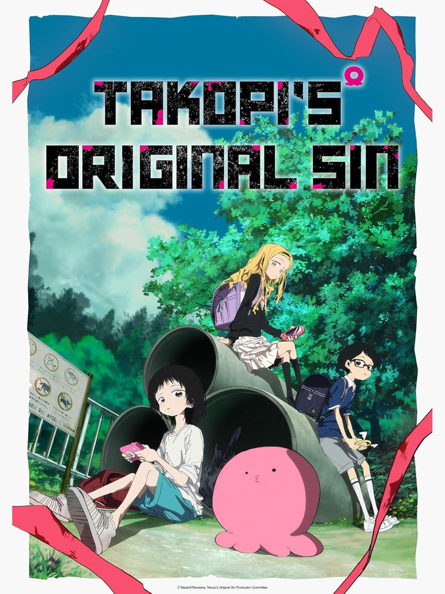
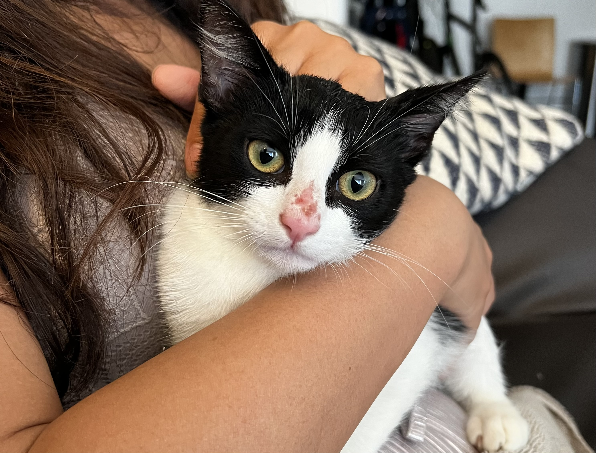

 Many of the shows I watch are animated shows because I don’t like how real actors act. This all started during class= "highlight" COVID when I was sent home with nothing to do so I watched various animated shows on youtube. I found those shows really interesting so I continued to watch them and eventually I was watching multiple episodes a day. Now the volume of my consumption has slowed but I still find myself watching these shows from time to time. Recently the genre I find myself leaning towards are coming of age and action stories.
My friends tell me I have a pretty weird taste in music since I actually don’t have a music preference. My playlist is just songs I like and songs I don’t like. But even so, I do have some biases. I prefer songs that are loud and make me feel like I’m at a concert. At the start I liked songs with a lighter feeling like kpop, but recently I’ve started to move toward 2010's rock bands or experimental stuff. Despite this new shift, my playlist still contains a random jumble of genre’s which I all play on shuffle. I listen to this playlist everywhere and everyday too, even when I’m studying I can just tune out both the screaming from rock and the light melodies from pop to the point where they all sound the same.
 After months of begging my parents to let me go to the animal shelter, I got my first cat in 2021, her name is Mochi. Mochi is a latte colored cat, but she’s pretty fat so I think she’d be a chewy cat, hence her name. Mochi’s also slightly outeyed and can’t really fight since her hands are small. My second cat was mysteriously brought home one night by my mom in 2022. I named her Koko to make her different from the other cats named Coco. This is because, according to my mom, Koko was outcast from the other cats because she was too weird. Koko’s a cow type, black and white fur, lazy, and slightly stupid.